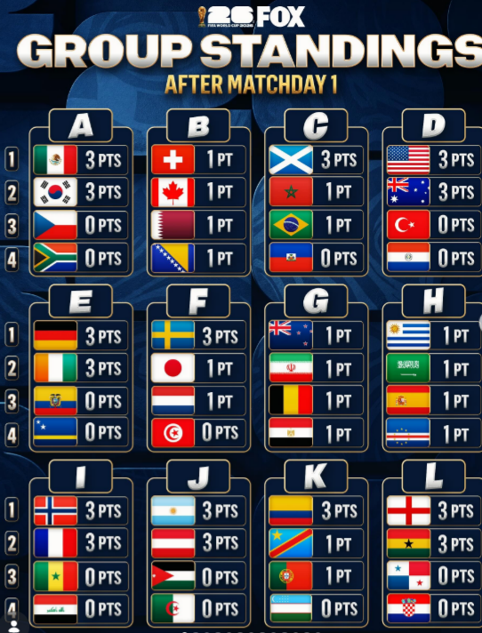
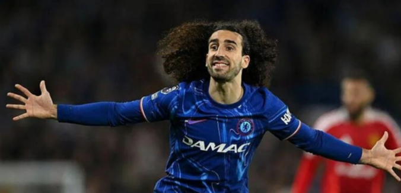
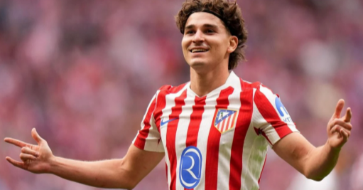
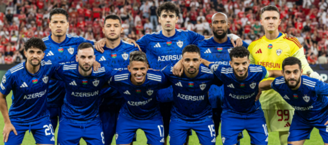
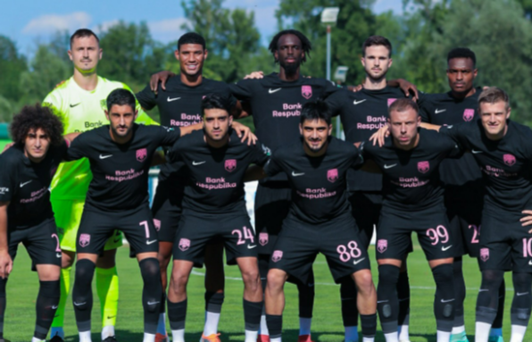
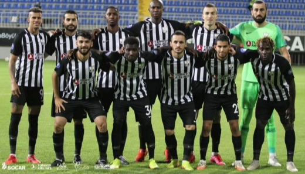
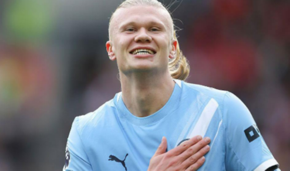
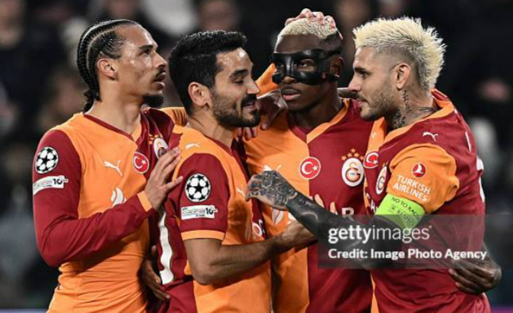

Türkiyə millisi meydana çıxır: D qrupunda yer alan Türkiyə millisi turnirdəki ikinci oyununda, San-Fransiskoda Paraqvay ilə qarşı-qarşıya gəlir. Azarkeşlərin diqqəti tamamilə bu matçdadır
Braziliya turnirə möhtəşəm start verdi: G qrupunda mübarizə aparan favorit Braziliya millisi, ilk oyununda Haiti üzərində 5:0 hesablı rahat və darmadağınçı qələbə qazandı. Vinisius Junior matçda şou göstərdi.

"Real Madrid"dən Kukurelya Hamlesi: İspaniya nəhəngi Mark Kukurelyanın transferini rəsmən duyurmağa hazırlaşır. Futbolçu artıq "Real"a keçidi ilə bağlı ilk açıqlamalarını verib.

"Arsenal"ın Hücum Planı: London klubu "Mançester Siti"nin ulduzu Xulian Alvarezi heyətinə qatmaq üçün ciddi şəkildə hərəkətə keçib.
"Barselona" və Liverpul Ulduzu: "Liverpul"un ulduz futbolçularından birinin Kataloniya klubuna təklif olunduğu iddia edilir.
Futbol tarixində maraqlı şərtlərlə olan müqavilələr: 1.Kosmos Qadağası(Stefan Şvark Sanderland) 1999-cu ildə İngiltərə klubu Stefan Şvarkı transfer edərkən şərti o idi ki o eger bu klubda karyerası zamanı kosmosa çıxarsa müqavilə ləğv ediləcək. 2.
Qarabağ Fk qış transfer xəbərləri: Qarabağ Fk-nin Whatsapp kanalının yaydığı məlumata görə yeni futbolçu(Bruno Langa) Qarabağa transfer oldu.Onuda qeyd edəkki ondan öncə Samuel Lobato,Sawo Zakario,Jaly Mouaddib kimi futbolçuların rəsmi olaraq transver olması açığlandı.
Qarabağ Fk nin Avropa liqasında ilk oyunu: İyun ayının 16-sı CBC sportda canlı yayınlanan Avropa liqası püşkatma mərasimində Qarabağın 1ci təsnifat mərhələsində rəqibi məlum oldu.Qarabağ ilk turda İslandiya nın Veistri klubu ilə qarşılaşacaq.Onuda qeyd edəkki bu oyun ilk turda evimizde 9 iyulda keçiriləcək.Cavab qarşılaşması isə 16 iyulda baş tutacaq.

Qarabağın Avropa liqasinda: Qarabağ Fk nin eger Avropa liqasında 1ci təsnifat mərhəlisini kəçərsə potensial reqibi məlum oldu.2-ci təsnifat mərhələsinə keçərsə Moik(Bolqarıstan)-Derri(İrlandiya) cütünün qalibi ilə qarşılaşacaq.
Qarabağ Fk nin MIsli premyar liqasinda ilk oyunu: Yeni mövsümüm hazırlığ mərhələsində Zirə Fk ilə ilk yoxlama oynuna çıxacaq Qarabağ Fk bu oyuna iyun ayının 20-sində saat 18:00 Azərsun Arenada keçirəcək.

Sabah Fk Çempionlar Liqasında: 16 İyun 2026-cı ildə CBC Sport-da canlı yayınlanan İsveçrənin Nyon şəhərində Çempionlar liqasının püşkatma mərasimində Sabahın ilk reqibi məlum oldu.Sabah 1-ci təsnifat mərhələsində "The New Saints" klubu ilə ilk oyunda evdə 7 iyul da saat 17:00 2-ci oyunda isə Uels-də 14 iyul saat 17:00 da qarşılaşacaq.Avro kuboklardakı bütün komandalarımıza uğurlar arzu edirik.

Neftçi klubunun Avro kuboklarda rəqibi məlum oldu:Neftçi Fk-nin Konfrans liqasinin 2-ci təsnifat mərhələsində rəqibi məlum oldu.Neftçinin rəqibi Dinamo(Minsk,Belarus)-Sileks(Şimali Makedoniya) cütünün qalibi ilə qarşılaşacaq

DÜNYA FUTBOLUNDA ŞOK: Erling Haalandın gələcəyi sual altında! Real Madrid yoxsa Barselona? Avropa futbolunun transfer bazarı yenidən alovlanır! İngiltərə mətbuatının yaydığı son məlumatlara görə, "Manchester City"nin qol maşını Erling Haalandın karyerasında yeni bir səhifə açmaq istədiyi iddia olunur. İspaniya nəhəngləri "Real Madrid" və "Barcelona" artıq ulduz hücumçu üçün hərəkətə keçib. Mütəxəssislər bu transferin futbol tarixindəki bütün qiymət rekordlarını qıracağını bildirirlər.

Aslanların Avropa Fəthi yenidən başlayır? Avropanın aparıcı idman qəzetləri (L'Equipe, Marca, La Gazzetta dello Sport) "Qalatasaray"ın Çempionlar Liqasındakı iddialı heyətini və transfer siyasətini təhlil edib. Xarici idman yazarları qeyd edirlər ki, Osimhen, Icardi və Okan Burukun taktikası ilə Qalatasaray bu mövsüm Avropanın böyük klubları üçün ən qorxulu rəqiblərdən biridir. Xüsusilə İstanbuldakı azarkeş atmosferi "cəhənnəm" olaraq xarakterizə edilib.